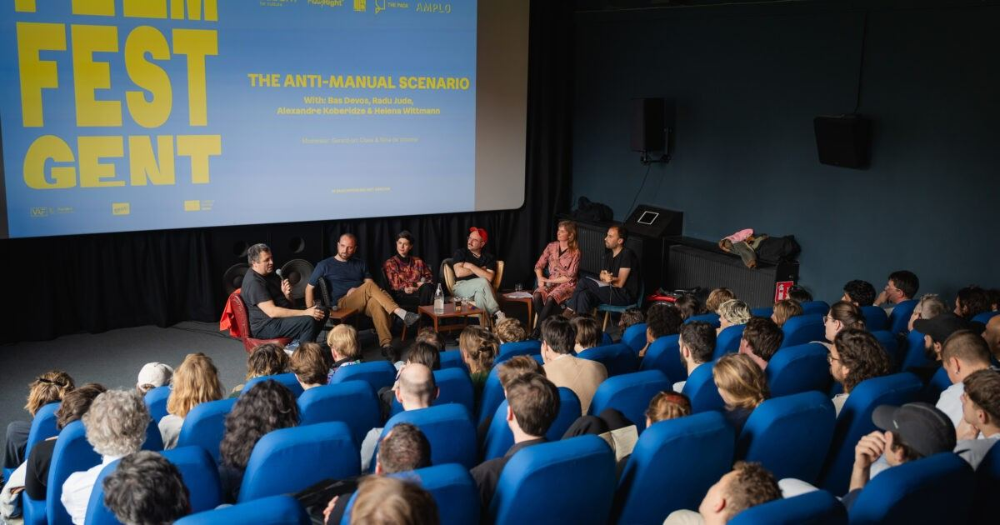

Festivals · Film
Film Fest Gent 2027
- Dates
- –
- Location
- Ghent, Belgium
- Format
- In-person
- Category
- Film
- Industry
- Film festival
- Organiser
- Film Fest Gent
- Official website
- https://www.filmfestival.be/en/press-industry
About
Dates are local to the host city (Central European Time, UTC+1 / UTC+2 in summer).
Topics: cinema, film festival, film music.
Official press-industry page says the festival presents films “to an audience of over 100,000 spectators.” That is standing wording about the festival, not a clearly worded 2027 expected-attendance figure, so it is not stored as organiser attendance. Ranked by our estimated size tier 'very large' (100,000+ attendees/visits).